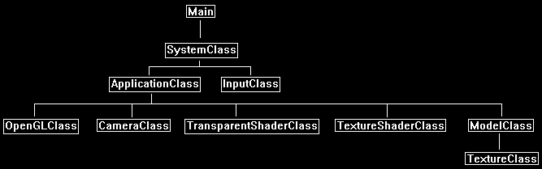

Transparency is the effect that allows textured objects to appear see through. For example, take the following texture:

We can make it half transparent and then render it over another texture to create the following transparency effect:

Transparency is implemented in OpenGL 4.0 and GLSL by using alpha blending.
The alpha component of any pixel is used to determine the transparency of that pixel.
For example, if a pixel alpha value is 0.5 then it would appear half transparent.
Many textures have an alpha component that can be modified to make the texture transparent in some areas and opaque in others.
However, for alpha values to take effect you have to first turn enable alpha blending in the OpenGL state and set the blending equation for how to blend pixels.
In this tutorial we use the common blending state from the OpenGLClass as follows:
glEnable(GL_BLEND);
glBlendFuncSeparate(GL_SRC_ALPHA, GL_ONE_MINUS_SRC_ALPHA, GL_ONE, GL_ZERO);
Now with blending we have a destination (the black background with the dirt texture written to it) and a source (the stone texture we will now write using the transparency shader).
The blending function GL_ONE_MINUS_SRC_ALPHA equates to one minus the source alpha value.
For example, if the source alpha is 0.9 then the destination alpha would be 0.1 so we will combine 10% of the destination pixel color with 90% of the source pixel in the final combine.
In the image above we used 0.5 so we get half of the dirt and half of the stone in the final combine.
We also get half of the black when the stone texture is overlaying the black section of the render destination.
Framework
The framework for this tutorial has a new class called TransparentShaderClass.
This class is the same as the TextureShaderClass except that is has an alpha blending value.

Transparent.vs
The transparent texture vertex shader is the same as the regular texture vertex shader.
////////////////////////////////////////////////////////////////////////////////
// Filename: transparent.vs
////////////////////////////////////////////////////////////////////////////////
#version 400
/////////////////////
// INPUT VARIABLES //
/////////////////////
in vec3 inputPosition;
in vec2 inputTexCoord;
//////////////////////
// OUTPUT VARIABLES //
//////////////////////
out vec2 texCoord;
///////////////////////
// UNIFORM VARIABLES //
///////////////////////
uniform mat4 worldMatrix;
uniform mat4 viewMatrix;
uniform mat4 projectionMatrix;
////////////////////////////////////////////////////////////////////////////////
// Vertex Shader
////////////////////////////////////////////////////////////////////////////////
void main(void)
{
// Calculate the position of the vertex against the world, view, and projection matrices.
gl_Position = vec4(inputPosition, 1.0f) * worldMatrix;
gl_Position = gl_Position * viewMatrix;
gl_Position = gl_Position * projectionMatrix;
// Store the texture coordinates for the pixel shader.
texCoord = inputTexCoord;
}
Transparent.ps
////////////////////////////////////////////////////////////////////////////////
// Filename: transparent.ps
////////////////////////////////////////////////////////////////////////////////
#version 400
/////////////////////
// INPUT VARIABLES //
/////////////////////
in vec2 texCoord;
//////////////////////
// OUTPUT VARIABLES //
//////////////////////
out vec4 outputColor;
///////////////////////
// UNIFORM VARIABLES //
///////////////////////
uniform sampler2D shaderTexture;
We add a new uniform float variable to hold the alpha blending amount.
The blendAmount indicates was percentage to blend the texture.
The acceptable value range is from 0 to 1.
In this tutorial it is set to 0.5 which means 50% transparency.
uniform float blendAmount;
////////////////////////////////////////////////////////////////////////////////
// Pixel Shader
////////////////////////////////////////////////////////////////////////////////
void main(void)
{
vec4 textureColor;
// Sample the pixel color from the texture using the sampler at this texture coordinate location.
textureColor = texture(shaderTexture, texCoord);
Here we use the blendAmount variable to set the transparency of the texture.
We set the alpha value of the pixel to the blend amount and when rendered it will use the alpha value with the blend state we setup to create the transparency effect.
// Set the alpha value of this pixel to the blending amount to create the alpha blending effect.
textureColor.a = blendAmount;
outputColor = textureColor;
}
Transparentshaderclass.h
The TransparentShaderClass is the same as the TextureShaderClass with some extra changes to accommodate transparency.
////////////////////////////////////////////////////////////////////////////////
// Filename: transparentshaderclass.h
////////////////////////////////////////////////////////////////////////////////
#ifndef _TRANSPARENTSHADERCLASS_H_
#define _TRANSPARENTSHADERCLASS_H_
//////////////
// INCLUDES //
//////////////
#include <iostream>
using namespace std;
///////////////////////
// MY CLASS INCLUDES //
///////////////////////
#include "openglclass.h"
////////////////////////////////////////////////////////////////////////////////
// Class name: TransparentShaderClass
////////////////////////////////////////////////////////////////////////////////
class TransparentShaderClass
{
public:
TransparentShaderClass();
TransparentShaderClass(const TransparentShaderClass&);
~TransparentShaderClass();
bool Initialize(OpenGLClass*);
void Shutdown();
bool SetShaderParameters(float*, float*, float*, float);
private:
bool InitializeShader(char*, char*);
void ShutdownShader();
char* LoadShaderSourceFile(char*);
void OutputShaderErrorMessage(unsigned int, char*);
void OutputLinkerErrorMessage(unsigned int);
private:
OpenGLClass* m_OpenGLPtr;
unsigned int m_vertexShader;
unsigned int m_fragmentShader;
unsigned int m_shaderProgram;
};
#endif
Transparentshaderclass.cpp
////////////////////////////////////////////////////////////////////////////////
// Filename: transparentshaderclass.cpp
////////////////////////////////////////////////////////////////////////////////
#include "transparentshaderclass.h"
TransparentShaderClass::TransparentShaderClass()
{
m_OpenGLPtr = 0;
}
TransparentShaderClass::TransparentShaderClass(const TransparentShaderClass& other)
{
}
TransparentShaderClass::~TransparentShaderClass()
{
}
bool TransparentShaderClass::Initialize(OpenGLClass* OpenGL)
{
char vsFilename[128];
char psFilename[128];
bool result;
// Store the pointer to the OpenGL object.
m_OpenGLPtr = OpenGL;
We load the transparent.vs and transparent.ps GLSL shader files here.
// Set the location and names of the shader files.
strcpy(vsFilename, "../Engine/transparent.vs");
strcpy(psFilename, "../Engine/transparent.ps");
// Initialize the vertex and pixel shaders.
result = InitializeShader(vsFilename, psFilename);
if(!result)
{
return false;
}
return true;
}
void TransparentShaderClass::Shutdown()
{
// Shutdown the shader.
ShutdownShader();
// Release the pointer to the OpenGL object.
m_OpenGLPtr = 0;
return;
}
bool TransparentShaderClass::InitializeShader(char* vsFilename, char* fsFilename)
{
const char* vertexShaderBuffer;
const char* fragmentShaderBuffer;
int status;
// Load the vertex shader source file into a text buffer.
vertexShaderBuffer = LoadShaderSourceFile(vsFilename);
if(!vertexShaderBuffer)
{
return false;
}
// Load the fragment shader source file into a text buffer.
fragmentShaderBuffer = LoadShaderSourceFile(fsFilename);
if(!fragmentShaderBuffer)
{
return false;
}
// Create a vertex and fragment shader object.
m_vertexShader = m_OpenGLPtr->glCreateShader(GL_VERTEX_SHADER);
m_fragmentShader = m_OpenGLPtr->glCreateShader(GL_FRAGMENT_SHADER);
// Copy the shader source code strings into the vertex and fragment shader objects.
m_OpenGLPtr->glShaderSource(m_vertexShader, 1, &vertexShaderBuffer, NULL);
m_OpenGLPtr->glShaderSource(m_fragmentShader, 1, &fragmentShaderBuffer, NULL);
// Release the vertex and fragment shader buffers.
delete [] vertexShaderBuffer;
vertexShaderBuffer = 0;
delete [] fragmentShaderBuffer;
fragmentShaderBuffer = 0;
// Compile the shaders.
m_OpenGLPtr->glCompileShader(m_vertexShader);
m_OpenGLPtr->glCompileShader(m_fragmentShader);
// Check to see if the vertex shader compiled successfully.
m_OpenGLPtr->glGetShaderiv(m_vertexShader, GL_COMPILE_STATUS, &status);
if(status != 1)
{
// If it did not compile then write the syntax error message out to a text file for review.
OutputShaderErrorMessage(m_vertexShader, vsFilename);
return false;
}
// Check to see if the fragment shader compiled successfully.
m_OpenGLPtr->glGetShaderiv(m_fragmentShader, GL_COMPILE_STATUS, &status);
if(status != 1)
{
// If it did not compile then write the syntax error message out to a text file for review.
OutputShaderErrorMessage(m_fragmentShader, fsFilename);
return false;
}
// Create a shader program object.
m_shaderProgram = m_OpenGLPtr->glCreateProgram();
// Attach the vertex and fragment shader to the program object.
m_OpenGLPtr->glAttachShader(m_shaderProgram, m_vertexShader);
m_OpenGLPtr->glAttachShader(m_shaderProgram, m_fragmentShader);
// Bind the shader input variables.
m_OpenGLPtr->glBindAttribLocation(m_shaderProgram, 0, "inputPosition");
m_OpenGLPtr->glBindAttribLocation(m_shaderProgram, 1, "inputTexCoord");
// Link the shader program.
m_OpenGLPtr->glLinkProgram(m_shaderProgram);
// Check the status of the link.
m_OpenGLPtr->glGetProgramiv(m_shaderProgram, GL_LINK_STATUS, &status);
if(status != 1)
{
// If it did not link then write the syntax error message out to a text file for review.
OutputLinkerErrorMessage(m_shaderProgram);
return false;
}
return true;
}
void TransparentShaderClass::ShutdownShader()
{
// Detach the vertex and fragment shaders from the program.
m_OpenGLPtr->glDetachShader(m_shaderProgram, m_vertexShader);
m_OpenGLPtr->glDetachShader(m_shaderProgram, m_fragmentShader);
// Delete the vertex and fragment shaders.
m_OpenGLPtr->glDeleteShader(m_vertexShader);
m_OpenGLPtr->glDeleteShader(m_fragmentShader);
// Delete the shader program.
m_OpenGLPtr->glDeleteProgram(m_shaderProgram);
return;
}
char* TransparentShaderClass::LoadShaderSourceFile(char* filename)
{
FILE* filePtr;
char* buffer;
long fileSize, count;
int error;
// Open the shader file for reading in text modee.
filePtr = fopen(filename, "r");
if(filePtr == NULL)
{
return 0;
}
// Go to the end of the file and get the size of the file.
fseek(filePtr, 0, SEEK_END);
fileSize = ftell(filePtr);
// Initialize the buffer to read the shader source file into, adding 1 for an extra null terminator.
buffer = new char[fileSize + 1];
// Return the file pointer back to the beginning of the file.
fseek(filePtr, 0, SEEK_SET);
// Read the shader text file into the buffer.
count = fread(buffer, 1, fileSize, filePtr);
if(count != fileSize)
{
return 0;
}
// Close the file.
error = fclose(filePtr);
if(error != 0)
{
return 0;
}
// Null terminate the buffer.
buffer[fileSize] = '\0';
return buffer;
}
void TransparentShaderClass::OutputShaderErrorMessage(unsigned int shaderId, char* shaderFilename)
{
long count;
int logSize, error;
char* infoLog;
FILE* filePtr;
// Get the size of the string containing the information log for the failed shader compilation message.
m_OpenGLPtr->glGetShaderiv(shaderId, GL_INFO_LOG_LENGTH, &logSize);
// Increment the size by one to handle also the null terminator.
logSize++;
// Create a char buffer to hold the info log.
infoLog = new char[logSize];
// Now retrieve the info log.
m_OpenGLPtr->glGetShaderInfoLog(shaderId, logSize, NULL, infoLog);
// Open a text file to write the error message to.
filePtr = fopen("shader-error.txt", "w");
if(filePtr == NULL)
{
cout << "Error opening shader error message output file." << endl;
return;
}
// Write out the error message.
count = fwrite(infoLog, sizeof(char), logSize, filePtr);
if(count != logSize)
{
cout << "Error writing shader error message output file." << endl;
return;
}
// Close the file.
error = fclose(filePtr);
if(error != 0)
{
cout << "Error closing shader error message output file." << endl;
return;
}
// Notify the user to check the text file for compile errors.
cout << "Error compiling shader. Check shader-error.txt for error message. Shader filename: " << shaderFilename << endl;
return;
}
void TransparentShaderClass::OutputLinkerErrorMessage(unsigned int programId)
{
long count;
FILE* filePtr;
int logSize, error;
char* infoLog;
// Get the size of the string containing the information log for the failed shader compilation message.
m_OpenGLPtr->glGetProgramiv(programId, GL_INFO_LOG_LENGTH, &logSize);
// Increment the size by one to handle also the null terminator.
logSize++;
// Create a char buffer to hold the info log.
infoLog = new char[logSize];
// Now retrieve the info log.
m_OpenGLPtr->glGetProgramInfoLog(programId, logSize, NULL, infoLog);
// Open a file to write the error message to.
filePtr = fopen("linker-error.txt", "w");
if(filePtr == NULL)
{
cout << "Error opening linker error message output file." << endl;
return;
}
// Write out the error message.
count = fwrite(infoLog, sizeof(char), logSize, filePtr);
if(count != logSize)
{
cout << "Error writing linker error message output file." << endl;
return;
}
// Close the file.
error = fclose(filePtr);
if(error != 0)
{
cout << "Error closing linker error message output file." << endl;
return;
}
// Pop a message up on the screen to notify the user to check the text file for linker errors.
cout << "Error linking shader program. Check linker-error.txt for message." << endl;
return;
}
The SetShaderParameters function now takes as input the blendAmount value to be used for modifying the transparency amount in the pixel shader.
bool TransparentShaderClass::SetShaderParameters(float* worldMatrix, float* viewMatrix, float* projectionMatrix, float blendAmount)
{
float tpWorldMatrix[16], tpViewMatrix[16], tpProjectionMatrix[16];
int location;
// Transpose the matrices to prepare them for the shader.
m_OpenGLPtr->MatrixTranspose(tpWorldMatrix, worldMatrix);
m_OpenGLPtr->MatrixTranspose(tpViewMatrix, viewMatrix);
m_OpenGLPtr->MatrixTranspose(tpProjectionMatrix, projectionMatrix);
// Install the shader program as part of the current rendering state.
m_OpenGLPtr->glUseProgram(m_shaderProgram);
// Set the world matrix in the vertex shader.
location = m_OpenGLPtr->glGetUniformLocation(m_shaderProgram, "worldMatrix");
if(location == -1)
{
cout << "World matrix not set." << endl;
}
m_OpenGLPtr->glUniformMatrix4fv(location, 1, false, tpWorldMatrix);
// Set the view matrix in the vertex shader.
location = m_OpenGLPtr->glGetUniformLocation(m_shaderProgram, "viewMatrix");
if(location == -1)
{
cout << "View matrix not set." << endl;
}
m_OpenGLPtr->glUniformMatrix4fv(location, 1, false, tpViewMatrix);
// Set the projection matrix in the vertex shader.
location = m_OpenGLPtr->glGetUniformLocation(m_shaderProgram, "projectionMatrix");
if(location == -1)
{
cout << "Projection matrix not set." << endl;
}
m_OpenGLPtr->glUniformMatrix4fv(location, 1, false, tpProjectionMatrix);
// Set the texture in the pixel shader to use the data from the first texture unit.
location = m_OpenGLPtr->glGetUniformLocation(m_shaderProgram, "shaderTexture");
if(location == -1)
{
cout << "Shader texture not set." << endl;
}
m_OpenGLPtr->glUniform1i(location, 0);
We set the blendAmount value in the pixel shader here.
// Set the blending value in the pixel shader.
location = m_OpenGLPtr->glGetUniformLocation(m_shaderProgram, "blendAmount");
if(location == -1)
{
cout << "Blend amount not set." << endl;
}
m_OpenGLPtr->glUniform1f(location, blendAmount);
return true;
}
Applicationclass.h
The ApplicationClass has the transparentshaderclass.h included and a new TransparentShaderClass variable.
We also add two seperate models for the dirt and the stone squares that will be displayed on the screen.
The TextureShaderClass is also added to render the base dirt texture without transparency.
////////////////////////////////////////////////////////////////////////////////
// Filename: applicationclass.h
////////////////////////////////////////////////////////////////////////////////
#ifndef _APPLICATIONCLASS_H_
#define _APPLICATIONCLASS_H_
/////////////
// GLOBALS //
/////////////
const bool FULL_SCREEN = false;
const bool VSYNC_ENABLED = true;
const float SCREEN_NEAR = 0.3f;
const float SCREEN_DEPTH = 1000.0f;
///////////////////////
// MY CLASS INCLUDES //
///////////////////////
#include "inputclass.h"
#include "openglclass.h"
#include "modelclass.h"
#include "cameraclass.h"
#include "textureshaderclass.h"
#include "transparentshaderclass.h"
////////////////////////////////////////////////////////////////////////////////
// Class Name: ApplicationClass
////////////////////////////////////////////////////////////////////////////////
class ApplicationClass
{
public:
ApplicationClass();
ApplicationClass(const ApplicationClass&);
~ApplicationClass();
bool Initialize(Display*, Window, int, int);
void Shutdown();
bool Frame(InputClass*);
private:
bool Render();
private:
OpenGLClass* m_OpenGL;
ModelClass *m_Model1, *m_Model2;
CameraClass* m_Camera;
TextureShaderClass* m_TextureShader;
TransparentShaderClass* m_TransparentShader;
};
#endif
Applicationclass.cpp
////////////////////////////////////////////////////////////////////////////////
// Filename: applicationclass.cpp
////////////////////////////////////////////////////////////////////////////////
#include "applicationclass.h"
ApplicationClass::ApplicationClass()
{
m_OpenGL = 0;
m_Model1 = 0;
m_Model2 = 0;
m_Camera = 0;
m_TextureShader = 0;
m_TransparentShader = 0;
}
ApplicationClass::ApplicationClass(const ApplicationClass& other)
{
}
ApplicationClass::~ApplicationClass()
{
}
bool ApplicationClass::Initialize(Display* display, Window win, int screenWidth, int screenHeight)
{
char modelFilename[128];
char textureFilename1[128], textureFilename2[128];
bool result;
// Create and initialize the OpenGL object.
m_OpenGL = new OpenGLClass;
result = m_OpenGL->Initialize(display, win, screenWidth, screenHeight, SCREEN_NEAR, SCREEN_DEPTH, VSYNC_ENABLED);
if(!result)
{
cout << "Error: Could not initialize the OpenGL object." << endl;
return false;
}
// Create and initialize the camera object.
m_Camera = new CameraClass;
m_Camera->SetPosition(0.0f, 0.0f, -5.0f);
m_Camera->Render();
// Set the file name of the model.
strcpy(modelFilename, "../Engine/data/square.txt");
We set the two texture names for the dirt and the stone texture and then load the two models so each model has its own texture.
// Set the file names of the textures.
strcpy(textureFilename1, "../Engine/data/dirt01.tga");
strcpy(textureFilename2, "../Engine/data/stone01.tga");
// Create and initialize the first model object that will use the dirt texture.
m_Model1 = new ModelClass;
result = m_Model1->Initialize(m_OpenGL, modelFilename, textureFilename1, false, NULL, false, NULL, false);
if(!result)
{
cout << "Error: Could not initialize the model 1 object." << endl;
return false;
}
// Create and initialize the second model object that will use the stone texture.
m_Model2 = new ModelClass;
result = m_Model2->Initialize(m_OpenGL, modelFilename, textureFilename2, false, NULL, false, NULL, false);
if(!result)
{
cout << "Error: Could not initialize the model 2 object." << endl;
return false;
}
// Create and initialize the texture shader object.
m_TextureShader = new TextureShaderClass;
result = m_TextureShader->Initialize(m_OpenGL);
if(!result)
{
cout << "Error: Could not initialize the texture shader object." << endl;
return false;
}
We create and load in the new TransparentShaderClass here.
// Create and initialize the transparent shader object.
m_TransparentShader = new TransparentShaderClass;
result = m_TransparentShader->Initialize(m_OpenGL);
if(!result)
{
cout << "Error: Could not initialize the transparent shader object." << endl;
return false;
}
return true;
}
void ApplicationClass::Shutdown()
{
The new TransparentShaderClass is released here.
// Release the transparent shader object.
if(m_TransparentShader)
{
m_TransparentShader->Shutdown();
delete m_TransparentShader;
m_TransparentShader = 0;
}
// Release the texture shader object.
if(m_TextureShader)
{
m_TextureShader->Shutdown();
delete m_TextureShader;
m_TextureShader = 0;
}
We release both square models here.
// Release the model objects.
if(m_Model2)
{
m_Model2->Shutdown();
delete m_Model2;
m_Model2 = 0;
}
if(m_Model1)
{
m_Model1->Shutdown();
delete m_Model1;
m_Model1 = 0;
}
// Release the camera object.
if(m_Camera)
{
delete m_Camera;
m_Camera = 0;
}
// Release the OpenGL object.
if(m_OpenGL)
{
m_OpenGL->Shutdown();
delete m_OpenGL;
m_OpenGL = 0;
}
return;
}
bool ApplicationClass::Frame(InputClass* Input)
{
bool result;
// Check if the escape key has been pressed, if so quit.
if(Input->IsEscapePressed() == true)
{
return false;
}
// Render the graphics scene.
result = Render();
if(!result)
{
return false;
}
return true;
}
bool ApplicationClass::Render()
{
float worldMatrix[16], viewMatrix[16], projectionMatrix[16];
float blendAmount;
bool result;
Setup a blend variable that will be sent into the transparent shader.
// Set the blending amount to 50%.
blendAmount = 0.5f;
// Clear the buffers to begin the scene.
m_OpenGL->BeginScene(0.0f, 0.0f, 0.0f, 1.0f);
// Get the world, view, and projection matrices from the opengl and camera objects.
m_OpenGL->GetWorldMatrix(worldMatrix);
m_Camera->GetViewMatrix(viewMatrix);
m_OpenGL->GetProjectionMatrix(projectionMatrix);
Render the first square model with the dirt texture in the center of the screen.
Use just the regular texture shader for this.
// Set the texture shader as the current shader program and set the matrices that it will use for rendering.
result = m_TextureShader->SetShaderParameters(worldMatrix, viewMatrix, projectionMatrix);
if(!result)
{
return false;
}
// Render the first model that is using the dirt texture using the regular texture shader.
m_Model1->SetTexture1(0);
m_Model1->Render();
Render the second square model with the stone texture slightly to the right and in front of the previous square texture.
Use the new TransparentShaderClass object with the blendAmount input to render the square stone texture with transparency so we can see through it.
Also turn on the alpha blending from the OpenGLClass before rendering and then turn it off after rendering.
// Translate to the right by one unit and towards the camera by one unit.
m_OpenGL->MatrixTranslation(worldMatrix, 1.0f, 0.0f, -1.0f);
// Turn on alpha blending for the transparency to work.
m_OpenGL->EnableAlphaBlending();
// Render the second square model with the stone texture and use the 50% blending amount for transparency.
result = m_TransparentShader->SetShaderParameters(worldMatrix, viewMatrix, projectionMatrix, blendAmount);
if(!result)
{
return false;
}
// Render the model.
m_Model2->SetTexture1(0);
m_Model2->Render();
// Turn off alpha blending.
m_OpenGL->DisableAlphaBlending();
// Present the rendered scene to the screen.
m_OpenGL->EndScene();
return true;
}
Summary
Using transparency we can create see through textures and models which allows us to create a number of different effects.
To Do Exercises
1. Recompile the and run the program. Press escape to quit.
2. Change the value of the blendAmount in the Application::Render function to see different amounts of transparency.
Source Code
Source Code and Data Files: gl4linuxtut29_src.tar.gz